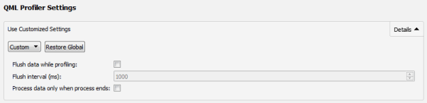
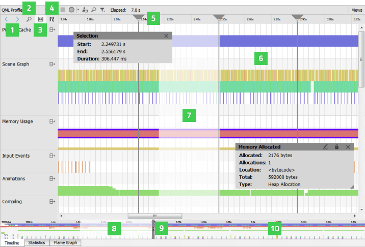
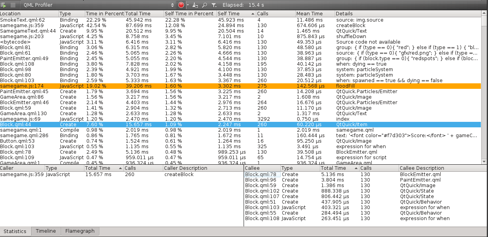
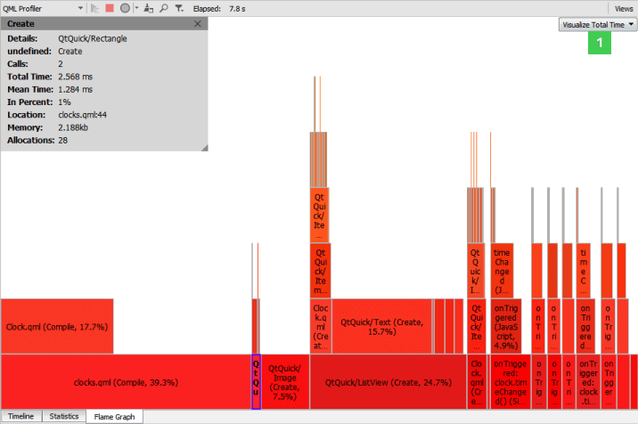

Profiling QML Applications
You can use the QML Profiler to find causes for typical performance problems in your applications, such as slowness and unresponsive, stuttering user interfaces. Typical causes include executing too much JavaScript in too few frames. All JavaScript must return before the GUI thread can proceed, and frames are delayed or dropped if the GUI thread is not ready.
Another typical cause for similar performance problems is creating, painting, or updating invisible items, which takes time in the GUI thread.
Triggering long-running C++ functions, such as paint methods and signal handlers, also takes time in the GUI thread, but is more difficult to see in the QML Profiler, because it does not profile C++ code.
To find excessive use of JavaScript, check the frame rate in animations and Scene Graph events, look for gaps, and check whether the application behaves as expected. The JavaScript category displays the run time of functions, which you should try to keep below 16 ms per frame.
To find problems caused by handling invisible items, look for dropped frames and check that you are not using too many short bindings or signal handlers that are updated per frame. You can also visualize Scene Graph overdraw to check scene layout and find items that are never visible to the users, because they are located outside the screen or hidden beneath other, visible elements.
If frames get dropped even though JavaScript is not being run, and there are large, unexplained gaps in the timeline, check your custom QQuickItem implementations. You can use Valgrind or other general purpose profilers to analyze C++ code.
Using QML Profiler
To monitor the performance of an application in the QML Profiler:
- To be able to profile an application, you must set up QML debugging for the project. For more information, see Setting Up QML Debugging.
- In the Projects mode, select a kit with Qt version 4.7.4 or later.
Note: To profile applications on devices, you must install Qt 4.7.4 or later libraries on them.
- Select Analyze > QML Profiler to profile the current application.
- Select the
 (Start) button to start the application from the QML Profiler.
(Start) button to start the application from the QML Profiler.Note: If data collection does not start automatically, select the
 (Enable Profiling) button.
(Enable Profiling) button.
When you start analyzing an application, the application is launched, and the QML Profiler immediately begins to collect data. This is indicated by the time running in the Elapsed field.
Data is collected until you select the Enable Profiling button. Data collection takes time, and therefore, there might be a delay before the data is displayed.
Do not use application commands to exit the application, because data is sent to the QML Profiler when you select the Enable Profiling button. The application continues to run for some seconds, after which it is stopped automatically. If you exit the application, the data is not sent.
Select the Disable Profiling button to disable the automatic start of the data collection when an application is launched. Data collection starts when you select the button again.
To save all the collected data, right-click any QML Profiler view to open the context menu, and then select Save QML Trace. To view the saved data, select Load QML Trace. You can also deliver the saved data to other developers for examination or load data saved by them.
Specifying Flushing Settings
You can specify flushing settings for the QML Profiler either globally for all projects or separately for each project. To specify global settings, select Tools > Options > Analyzer.
To specify custom QML Profiler settings for a particular project, select Projects > Run and then select Custom in QML Profiler Settings. To restore the global settings for the project, select Restore Global.

Select the Flush data while profiling check box to flush the data periodically instead of flushing all data when profiling stops. This saves memory on the target device and shortens the wait between the profiling being stopped and the data being displayed.
In the Flush interval field, set the flush interval in milliseconds. The shorter the interval, the more often the data is flushed. The longer the interval, the more data has to be buffered in the target application, potentially wasting memory. However, the flushing itself takes time, which can distort the profiling results.
If you have multiple QML engines and you want to aggregate the data produced by all of them into one trace, select the Process data only when process ends check box. Otherwise, the profiling stops when one of the engines stops.
Attaching to Running Qt Quick Applications
To profile Qt Quick applications that are not launched by Qt Creator, select Analyze > QML Profiler (External). You must enable QML debugging and profiling for the application in the project build settings. For more information, see Setting Up QML Debugging.
In the QML Profiler dialog, Port field, specify the port to listen to.
Analyzing Collected Data
The Timeline view displays graphical representations of QML and JavaScript execution and a condensed view of all recorded events.

Each row in the timeline (6) describes a type of QML events that were recorded. Move the cursor on an event on a row to see how long it takes and where in the source it is being called. To display the information only when an event is selected, disable the View Event Information on Mouseover button (4).
The outline (10) summarizes the period for which data was collected. Drag the zoom range (8) or click the outline to move on the outline. You can also move between events by selecting the Jump to Previous Event and Jump to Next Event buttons (1).
Select the Show Zoom Slider button (2) to open a slider that you can use to set the zoom level. You can also drag the zoom handles (9). To reset the default zoom level, right-click the timeline to open the context menu, and select Reset Zoom.
Click the time ruler to add vertical orientation lines (5) to the timeline.
Selecting Event Ranges
You can select an event range (7) to view the frame rate of events and to compare it with the frame rate of similar events. Select the Select Range button (3) to activate the selection tool. Then click in the timeline to specify the beginning of the event range. Drag the selection handle to define the end of the range. The length of the range indicates the frame rate of the event.
You can use event ranges also to measure delays between two subsequent events. Place a range between the end of the first event and the beginning of the second event. The Duration field displays the delay between the events in milliseconds.
To zoom into an event range, double-click it.
To remove an event range, close the Selection dialog.
Understanding the Data
Generally, events in the timeline view indicate how long QML or JavaScript execution took. Move the mouse over them to see details. For most events, they include location in source code, duration and some relevant parts of the source code itself.
You can click on an event to move the cursor in the code editor to the part of the code the event is associated with.
The following types of events are displayed in the timeline view on one or several rows. The availability of event types depends on the version of Qt the application was compiled with and the version of Qt Quick it is using.
| Event Category | Description | Minimum Qt Version | Qt Quick Version |
|---|---|---|---|
| Pixmap Cache | Displays the general amount of pixmap data cached, in pixels. In addition, displays a separate event for each picture being loaded, with specifics about its file name and size. | Qt 5.1 | Qt Quick 2 |
| Scene Graph | Displays the time when scene graph frames are rendered and some additional timing information for the various stages executed to do so. | Qt 5.1 | Qt Quick 2 |
| Memory Usage | Displays block allocations of the JavaScript memory manager. Generally, the memory manager will reserve larger blocks of memory in one piece and later hand them out to the application in smaller bits. If the application requests single blocks of memory surpassing a certain size, the memory manager will allocate those separately. Those two modes of operation are shown as events of different colors. The second row displays the actual usage of the allocated memory. This is the amount of JavaScript heap the application has actually requested. | Qt 5.4 | Qt Quick 2 |
| Input Events | Displays mouse and keyboard events. | Qt 4.7.4 | Qt Quick 1 or Qt Quick 2 |
| Painting | Displays the time spent painting the scene for each frame. | Qt 4.7.4 | Qt Quick 1 |
| Animations | Displays the amount of animations that are active and the frame rate that they are running at. Information about render thread animations is displayed for applications that are built with Qt 5.3 or later. Render thread animations are shown in a separate row then. | Qt 5.0 (Qt 5.3) | Qt Quick 2 |
| Compiling | Displays the time spent compiling the QML files. | Qt 4.7.4 | Qt Quick 1 or Qt Quick 2 |
| Creating | Displays the time spent creating the elements in the scene. In Qt Quick 2, creation of elements takes place in two stages. The first stage is for the creation of the data structures, including child elements. The second stage represents the completion callbacks. Not all elements trigger completion callbacks, though. The stages are shown as separate events in the timeline. For Qt Quick 2 applications compiled with versions of Qt before 5.2.1 only the creation of top-level elements is shown, as single events. | Qt 4.7.4 (Qt 5.2.1) | Qt Quick 1 or Qt Quick 2 |
| Binding | Displays the time when a binding is evaluated and how long the evaluation takes. | Qt 4.7.4 | Qt Quick 1 or Qt Quick 2 |
| Handling Signal | Displays the time when a signal is handled and how long the handling takes. | Qt 4.7.4 | Qt Quick 1 or Qt Quick 2 |
| JavaScript | Displays the time spent executing the actual JavaScript behind bindings and signal handlers. It lists all the JavaScript functions you may be using to evaluate bindings or handle signals. | Qt 5.3 | Qt Quick 2 |
Analyzing Scene Graph Events
In order to understand the scene graph category, it's important to understand how the Qt Quick scene graph works. See Qt Quick Scene Graph and Qt Quick Scene Graph Renderer for a detailed description. The following events are reported in the Scene Graph category. Not all events are generated by all render loops. In the Windows and Basic render loops everything runs in the same thread and the distinction between GUI thread and render thread is meaningless.
If you set the environment variable QSG_RENDER_TIMING, you get a textual output of similar, but slightly different timings from the application being profiled. For easier orientation, the differences are listed below.
| Event Type | Thread | Render Loop Types | Label in output of QSG_RENDER_TIMING | Description | Caveats |
|---|---|---|---|---|---|
| Polish | GUI | Threaded, Basic, Windows | polish | Final touch-up of items before they are rendered using QQuickItem::updatePolish(). | Versions of Qt prior to Qt 5.4 record no polish times for the basic render loop and incorrect ones for the windows render loop. |
| GUI Thread Wait | GUI | Threaded | lock | Executing slots connected to the QQuickWindow::afterAnimating() signal and then locking the render thread's mutex before waiting on the same mutex at GUI Thread Sync. If this starts long before Render Thread Sync, there is free time in the GUI thread you could be using for running additional QML or JavaScript. | None |
| GUI Thread Sync | GUI | Threaded | blockedForSync | The time the GUI thread is blocked, waiting for the render thread. | None |
| Animations | GUI | Threaded, Windows | animations | Advancing animations in the GUI thread. The basic render loop does not drive animations in sync with the rendering. This is why no animation events will be shown when using the basic render loop. Watch the Animations category to see animation timing in this case. | None |
| Render Thread Sync | Render | Threaded, Basic, Windows | Frame rendered ... sync | Synchronizing the QML state into the scene graph using QQuickItem::updatePaintNode(). | None |
| Render | Render | Threaded, Basic, Windows | Frame rendered ... render | Total time spent rendering the frame, including preparing and uploading all the necessary data to the GPU. This is the gross render time. Do not confuse it with the net Render Render time below. | With versions of Qt prior to Qt 5.5, the gross render time and the below breakup of render times may be misaligned by some microseconds due to different, unsynchronized timers being used to measure them. For example Render Preprocess might seem to start before Render Thread Sync is finished. |
| Swap | Render | Threaded, Basic, Windows | Frame rendered ... swap | Swapping frames after rendering. | The output of swap times triggered by setting QSG_RENDER_TIMING is incorrect for the basic render loop and versions of Qt prior to Qt 5.4. The QML profiler shows the correct swap times. |
| Render Preprocess | Render | Threaded, Basic, Windows | time in renderer ... preprocess | Calling QSGNode::preprocess() on all nodes that need to be preprocessed. This is part of the gross Render step. | May not be properly aligned with Render with versions of Qt prior to Qt 5.5. |
| Render Update | Render | Threaded, Basic, Windows | time in renderer ... updates | Iterating and processing all the nodes in the scene graph to update their geometry, transformations, opacity, and other state. In the Render Thread Sync stage, each node is updated separately with state from the GUI thread. In Render Update, all the nodes are combined to create the final scene. This is part of the gross Render step. | May not be properly aligned with Render with versions of Qt prior to Qt 5.5. |
| Render Bind | Render | Threaded, Basic, Windows | time in renderer ... binding | Binding the correct framebuffer for OpenGL rendering. This is part of the gross Render step. | May not be properly aligned with Render with versions of Qt prior to Qt 5.5. |
| Render Render | Render | Threaded, Basic, Windows | time in renderer ... rendering | The actual process of sending all the data to the GPU via OpenGL. This is part of the gross Render step. | May not be properly aligned with Render with versions of Qt prior to Qt 5.5. |
| Material Compile | Render | Threaded, Basic, Windows | shader compiled | Compiling GLSL shader programs. | None |
| Glyph Render | Render | Threaded, Basic, Windows | glyphs ... rendering | Rendering of font glyphs into textures. | Versions of Qt prior to Qt 5.4 report incorrect times for these events. |
| Glyph Upload | Render | Threaded, Basic, Windows | glyphs ... upload | Uploading of glyph textures to the GPU. | Versions of Qt prior to Qt 5.4 report incorrect times for these events. |
| Texture Bind | Render | Threaded, Basic, Windows | plain texture ... bind | Binding a texture in the OpenGL context using glBindTextures. | None |
| Texture Convert | Render | Threaded, Basic, Windows | plain texture ... convert | Converting the format and downscaling an image to make it suitable for usage as a texture. | None |
| Texture Swizzle | Render | Threaded, Basic, Windows | plain texture ... swizzle | Swizzling the texture data on the CPU if necessary. | None |
| Texture Upload | Render | Threaded, Basic, Windows | plain texture ... upload / atlastexture uploaded | Uploading the texture data to the GPU. | None |
| Texture Mipmap | Render | Threaded, Basic, Windows | plain texture ... mipmap | Mipmapping a texture on the GPU. | None |
| Texture Delete | Render | Threaded, Basic, Windows | plain texture deleted | Deleting a texture from the GPU that became unnecessary. | None |
Viewing Statistics
The Statistics view displays the number of times each binding, create, compile, JavaScript, or signal event is triggered and the average time it takes. This allows you to examine which events you need to optimize. A high number of occurrences might indicate that an event is triggered unnecessarily. To view the median, longest, and shortest time for the occurrences, select Extended Event Statistics in the context menu.
Click on an event to move to it in the source code in the code editor.

The Callers and Callees panes show dependencies between events. They allow you to examine the internal functions of the application. The Callers pane summarizes the QML events that trigger a binding. This tells you what caused a change in a binding. The Callees pane summarizes the QML events that a binding triggers. This tells you which QML events are affected if you change a binding.
Click on an event to move to it in the source code in the code editor.
When you select an event in the Timeline view, information about it is displayed in the Statistics view. To view an event range in the Statistics view, select Analyze Current Range in the context menu in the Timeline view.
To copy the contents of one view or row to the clipboard, select Copy Table or Copy Row in the context menu.
JavaScript events are shown in the Statistics view only for applications that use Qt Quick 2 and are compiled with Qt 5.3 or later.
Visualizing Statistics as Flame Graphs
The Flame Graph view shows a more concise statistical overview of QML and JavaScript execution. In the Visualize Total Time view, the horizontal bars show the amount of time all invocations of a certain function took together, relative to the total runtime of all JavaScript and QML events. The nesting shows which functions were called by which other ones.

To view the total amount of memory allocated by the functions in the Visualize Memory view, select Memory in the drop-down menu (1).
To view the the number of memory allocations performed by the functions in the Visualize Allocations view, select Allocations in the drop-down menu.
Double-click an item in a view to zoom into it. Double-click an empty area in the view to zoom out again.
Unlike the Timeline view, the Flame Graph view does not show the time spans when no QML or JavaScript is running at all. Thus, it is not suitable for analyzing per frame execution times. However, it is very easy to see the total impact of the various QML and JavaScript events there.
© 2018 The Qt Company Ltd. Documentation contributions included herein are the copyrights of their respective owners. The documentation provided herein is licensed under the terms of the GNU Free Documentation License version 1.3 as published by the Free Software Foundation. Qt and respective logos are trademarks of The Qt Company Ltd in Finland and/or other countries worldwide. All other trademarks are property of their respective owners.